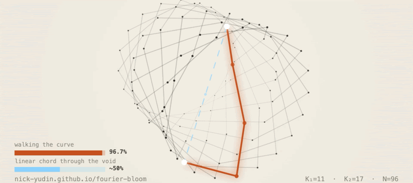
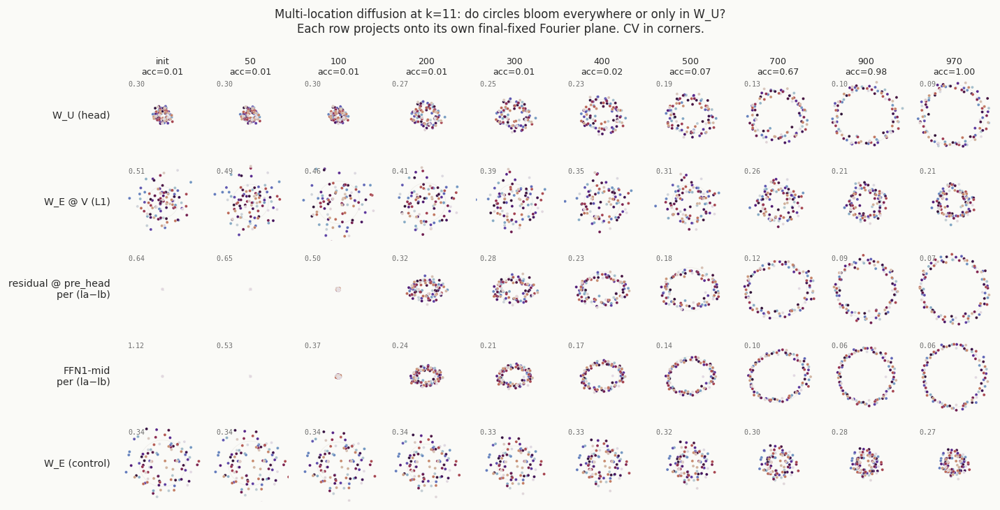
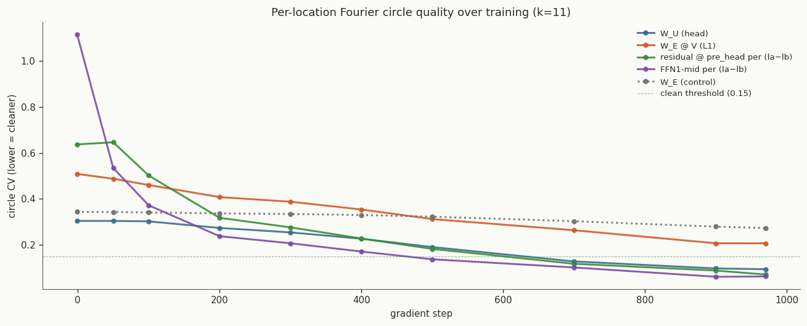
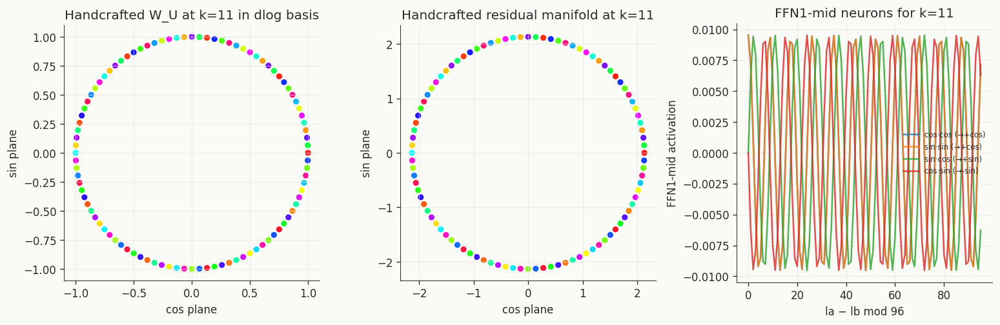

Inside the grokked manifold of mod-97 division: observe, build, steer
Three tests of understanding on one task — watch the algorithm form, rebuild it by hand, then steer the trained model along the curve it grew.

One task, one model: modular division mod 97 in a 2-block transformer (d=384). The observation of manifold formation every single step, hand-built reconstruction demonstrating precision as a proof that I understood it, and finally walking along the manifold, steering the answer. The next post tests four tasks in one shared head, and the one after that ports the operation to Llama 3.1 8B.
TL;DR. I trained a small transformer to compute c = a · b−1 (mod 97) and looked at what grokking actually built inside it: a 3D Fourier knot in the unembedding, in the FFN1 mid-stream, and in the attention-value composition. Same Fourier basis in several places at once. To check I understood the mechanism, I rebuilt the model by hand. With no training I got 100% accuracy on all 9216 input pairs. Knowing the geometry, I went back to the trained model and steered it three ways: dictation (100%), walking along the knot (96.7%), and the standard linear-chord activation steering (about 50%). The chord fails for a geometric reason: it cuts through territory the model never visited. Observe, build, steer — that's three tests of understanding of one task.
All notebooks are on GitHub and can be re-run end-to-end to reproduce every figure in this post: nick-yudin.github.io/manifold_features/fourier-bloom/.
1. The setup
A 2-block transformer, residual dimension 384, 12 attention heads,
SwiGLU FFN, RMSNorm, AdamW with lr = 1e-3, weight decay = 1.0,
betas = (0.9, 0.98), batch size 512, up to 1500 steps. The
task is c = a · b−1 mod 97, input is four tokens a, ×, b, =. The
output head produces logits over all 97 classes, class 0 is never a valid answer for division,
but the head includes it for simplicity.
Why this way: it is close to the native grokking works, but it also builds on my own earlier work where I was searching for the optimal model dimensionality across different modular-arithmetic tasks where grokking happens fastest. By grokking, in this context, I mean reaching 95%+ accuracy.
Training runs on 50 train / 50 validation split. Later I will change this to bring the setup closer to real training.
All runs use a single A100 in fp32 with full determinism enabled
(torch.use_deterministic_algorithms(True), cudnn.deterministic=True,
cudnn.benchmark=False, with manually seeded PyTorch and CUDA generators), so that
everything within a seed reproduces exactly. Most figures in this post are from a single
training run (seed 1000); cross-seed checks are over five seeds (1000–1004).
2. Observe
2.1 The standard grokking curve
Over ~960 steps we see the well-known curve described in Power et al. (2022) and analysed in Nanda et al. (2023): a plateau of about 660 steps at chance level (~1%, which is 1/97), then a rapid rise from 50% to 95% in roughly 150 steps (the 45–55% band is crossed in just 16 steps), then a stable hold around 99.9%. These two stages are commonly called memorization and, after the jump, generalization. My later experiments will show that what is actually happening inside the model during this window is a steady, structured development of the algorithm at many levels. There is no sudden moment of insight. We will come back to that in the next post, after you have seen the full set of experiments in this series.
2.2 The bloom
Now let's go through the process step by step at every level and look for what was predicted in Nanda et al. (2023): a Fourier-series representation, which visually appears as circles.
The unembedding W_U self-organizes from random init into a set of Fourier circles
in a 3D subspace. Pick the integer harmonics K₁ and K₂ with maximum
circular projection power on W_U, then project the 96 invertible-output rows onto
the four directions
(cos K₁·l, sin K₁·l, cos K₂·l, sin K₂·l)
where l = log_g(c) is the discrete log of c in some fixed generator
g. The 96 classes land on a Lissajous curve, a 3D knot, and the
circle quality approaches machine precision late in training.
The embedding W_E does not bloom. It stays near random init in the
same basis throughout training. So the bloom is task-induced and lives in the components that
compute the output, not in every weight matrix.
2.3 The same algorithm in many places at once
The Fourier basis is not local to W_U. The same harmonics appear in:
- FFN1 mid-stream
- residual-stream activations at the last position
W_UW_E ∘ Vcomposition (embedding routed through the attention value matrix)
…and not in W_E alone. The bloom shows up exactly where computation
flows. The embedding stays a neutral lookup table.
So the algorithm is a property of a shared basis, distributed across multiple
components that agree on the same K. It is not localised to any one weight matrix.
A panel of five locations × ten checkpoints makes this visible: every active site blooms on the
same Fourier-k=11 plane; the W_E control panel stays as
noise.

W_U each bloom from scatter to a clean circle. W_E∘V reaches a
partial circle. W_E (bottom row) never blooms. The circle structure shared across
these locations is the only object that matters for the prediction.

W_U, W_E∘V, residual stream, FFN1-mid — all converge
below the clean threshold of 0.15. The W_E control stays well above it. The four
sites finish forming at the same time and end up sharing one basis.
3. Build
3.1 The recipe
If §2 is right, I should be able to write down the algorithm and instantiate it as weights without any gradient steps. The recipe in four steps:
- Embed each token as its discrete log on a Fourier pair. For symbol
xwithl = log_g(x), setE[x] = (cos K·l, sin K·l)along chosen subspace coordinates. - Attention routes the values from positions
aandbto the prediction slot: a fixed pattern, no learning. - FFN1 multiplies the Fourier pairs into
cos K·(lₐ − l_b)via the cosine-difference identitycos K·lₐ · cos K·l_b + sin K·lₐ · sin K·l_b = cos K·(lₐ − l_b). The SwiGLU gate is set so the multiplied terms land in the residual stream with the right sign. W_Ureads the coordinates as per-class logits. Each output rowcequals its own Fourier coordinates; the inner product with the residual stream picks out classcwheneverlₐ − l_b ≡ l_c (mod 96), i.e. whenevera · b⁻¹ ≡ c (mod 97).
That is the whole algorithm. One head with one frequency, plus a second harmonic to disambiguate at the Nyquist limit.
3.2 The reconstruction
The recipe is a 90-line Python script that builds the state dict, loads it into the same architecture, and evaluates on all 9216 (a, b) pairs.
There are no learned weights and no training loop; the accuracy is 100% because the geometry is exact.
This is the falsifiability anchor. If §2 was wrong about which components share the basis, which harmonics matter, or how the FFN composes the multiplication, the script would not print 100%, but it actually does.
The hand-built weights and a 90-line verification script are in the repository. No training required. Load the weights, run through all 9,216 input pairs, see 100%:
# clone the repo, then: python verify_handcrafted.py Loading hand-built weights from handcrafted_state_dict.pt Running through 9216 (a, b) pairs... 9216/9216 correct = 100.0000% No training. Just the algorithm written into the weights.

W_U projected onto the k=11 dlog Fourier basis — 96 beads on a
single circle, no scatter. Middle: the residual manifold at the eq position, also a clean
circle. Right: FFN1-mid neuron activations grouped by la − lb.
Everything that the trained model grows is present in the handcrafted model by construction.
4. Steer
The handcrafted result is one half of the test. The other half: does the trained model actually use the geometry I observed, or is the bloom incidental, something training produced that the model could happily ignore in favor of some other internal route?
Three interventions, all applied at the last layer of the residual stream, all on the trained (not handcrafted) model.
4.1 Dictation: 100%
Replace the hidden state at the last position with the mean activation over inputs that produce
target class t. Discard everything the model computed and write the answer in
directly.
100% across all 96 targets, every seed.
What matters is that the manifold endpoints work as substitutes at all. If the geometry was noise, the dictated state would land somewhere the unembedding can not read.
4.2 Walking the knot: 96.7%
Pick a source class c and a shift Δ. Rotate the hidden state along the
Fourier circles by 2π·K·Δ / 96 in each (cos, sin) pair, applied as a rigid rotation
in the chosen subspace. The model produces c + Δ (mod 96).
Mean hit rate: 96.7% across seeds, across
Δ ∈ {±1, ±2, …, ±48}, including the Nyquist edge.
Walking moves along the structure the model built. The 96.7% across the full Δ range confirms the knot is the model's actual readout surface.
4.3 Linear chord: ~50%
The standard activation-steering baseline. Compute v_t − v_c between two manifold
points, scale it to Δ, add it to the residual stream. This is the right thing to
do if the model is roughly linear and the manifold is roughly flat.
About 50% on average, falling off sharply past Δ = 4–5.
It fails because the manifold is not flat. The chord cuts a straight line through interior 3D space that the model never visited during training, regions where the unembedding has no consistent readout.
Walking stays on the curve, dictation lands on it, and the chord cuts off into interior space where the unembedding has no readout.
5. What the knot means
The network grows a geometric object whose shape is the function.
Predictions are positions on the object and interventions are motions across it.
This reframes the classical grokking question "when does the model generalise?" as "when does the geometric object finish forming?". The handcrafted model is the limit case: instantiate the geometry exactly and you get 100% without training. "Generalisation" comes for free with the geometry. The bloom is the model crystallising into that limit.
6. What this is not
A few things this post does not claim:
- One head, one task, one modulus — this is not a claim about transformers in general.
- Modular addition has 1D Fourier geometry, max and parity have geometries that are not Fourier at all. Part 2 shows four such tasks in one shared head, and the manifolds are perpendicular rather than the same circle.
- Walking does not always beat the chord. For small
Δthe chord approximates the curve and gets close to 100%; the gap opens at largeΔ, where the curvature dominates. - The argument about steering large LLMs is not finished here. A separate experiment ports manifold dictation and steering to a 7B model.
- Hand-built grokked transformers go back to Nanda et al. (2023). The 3D-knot framing and the perpendicular-manifolds finding for multi-task are, I think, new, the broader insight that grokking produces structured internal representations has been around for years.
7. What's next
- Part 2: "Follow the Manifold." Same three tests on four tasks (division,
addition, max, parity) sharing one transformer head with
P = 149. Chord-walk hit rate ≥ 97% on all four tasks acrossΔ ∈ ±100; dictation 100% on every target class for all four tasks, linear chord at chance for the three high-dimensional tasks. The four manifolds turn out to be perpendicular — they coexist in one head and don't interfere. - Part 3: Grokking in general.
- Part 4: Manifold transfer to a real LLM.
Across all four: algorithms live as manifolds in residual space, learning grows those manifolds, and the geometry gives both a falsifiable account of what was learned and a productive operation on the trained model. This first post is the smallest case where I can show observe, build, steer on a single page.
8. Reproducibility
Five notebooks reproduce everything in this post:
- Training slowmo visualisation — the bloom timeline in §2.2.
- Multi-location bloom measurement — the 5-location × 10-checkpoint panel in §2.3.
- Hand-crafted weight construction — builds the state dict in §3 and verifies on all 9216 pairs.
verify_handcrafted.py— 90-line standalone script. Loads the handcrafted weights, runs the model on all 9216 (a, b) input pairs, compares each prediction against the ground-trutha · b⁻¹ mod 97, and prints the count of matches. Output should be9216/9216 correct = 100.0000%.- Steering — runs the dictation, walking, chord numbers in §4 plus additional baselines.
Plus JSON data (circle quality, neuron purities, hit rates), the trained state dict, and the handcrafted state dict.
The figures on the page are what the notebooks produce. There are no separately cleaned datasets or hand-picked runs.
Interactive version with the animated figures and the steering slider: nick-yudin.github.io/manifold_features/fourier-bloom/.
9. Acknowledgments
Independent work. Conceptual debts:
- Grokking phenomenology. Power, Burda, Edwards, Babuschkin, Misra (2022), Grokking: Generalization Beyond Overfitting on Small Algorithmic Datasets, arXiv:2201.02177.
- Mechanistic progress measures + Fourier prediction. Nanda, Chan, Lieberum, Smith, Steinhardt (2023), Progress Measures for Grokking via Mechanistic Interpretability, ICLR 2023, arXiv:2301.05217.
- Activation steering baseline. Turner, Thiergart, Leech, Udell, Vazquez, Mini, MacDiarmid (2023), Activation Addition: Steering Language Models Without Optimization, arXiv:2308.10248; and Zou et al. (2023), Representation Engineering: A Top-Down Approach to AI Transparency, arXiv:2310.01405.
- Circuits tradition. Olah, Cammarata, Schubert, Goh, Petrov, Carter (2020), Zoom In: An Introduction to Circuits, Distill, distill.pub/2020/circuits/zoom-in.
- Parameter decomposition / SPD framing. Braun, Bushnaq, Heimersheim, Goldowsky-Dill, Sharkey (2025), Interpretability in Parameter Space: Minimizing Mechanistic Description Length with Attribution-based Parameter Decomposition, arXiv:2501.14926; follow-up Bushnaq et al. (2025), Stochastic Parameter Decomposition, arXiv:2506.20790 (Apollo Research / Goodfire).
I prefer to state the limitations clearly in §6 rather than overstate the claims. Critique of that section is especially welcome.